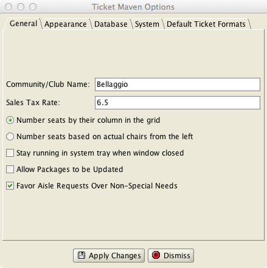
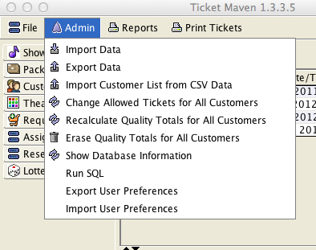
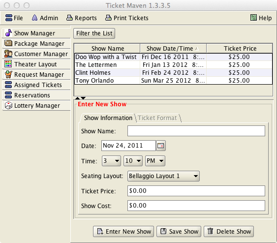

The Main Window
The TicketMaven main window consists of a menu bar on top and a set of “tabs” on the left.
The Menu Bar provides the following menus:
File Menu
Options – brings up a window to edit program options. One of these options is the club/community name to be printed on tickets.

Exit – exits the program
Admin (All of the Admin menu items should be used with caution by someone with expertise)
Import Data – used to import a database file into the program.
Export Data – export the database into a text file. The export is a way to create a full backup of your entire database. The export file can be used to recover a lost database.
Import Customer List from CSV data – this option is used to import customer data in CSV format into the database. The CSV data must be of the form: Last, First, Address, Phone. Customer lists kept in Excel or other spreadsheet programs can be exported into CSV files.
Change Allowed Tickets for All Customers – this is used to change the number of allowed tickets in the customer database for all customers at the same time.
Recalculate Quality Totals for All Customers – will cause the program to discard the recorded ticket quality values for ALL customers and recalculate these values based solely on the tickets in the database. Can be used after a show is deleted from the database to remove the quality valu.es from that show's tickets.
Erase Quality Totals for All Customers – will discard all prior quality values for all customers.
Database Information – shows information about the contents of the database
Run SQL – this option provides direct SQL access to the database and is meant to be used by only by MBCSoft to provide certain support functions if needed.
Import/Export User Preferences – these options will backup and restore the user preferences.

Reports
The reports menu provides access to a number of reports that can be used to manage your ticketing process. For example, some of these reports are intended to aid in the assignment of show-night ticket purchases for any unassigned seats.
Print Tickets
Various methods are provided to print different sets of tickets to a standard sheet of 10 business cards.
On the left are a number of tabs. Selecting a particular tab will change the contents of the main window. These tabs are:
Show Manager – to view and manage the list of shows
Package Manager – to create and manage packages of shows
Customer Manager – to view and manage the customer database
Theater Layout – to view and manage the seating arrangement for the theater
Ticket Requests – to view manage the unassigned requests for tickets. These include requests for shows that have not had an assignment lottery run and also requests that “lost” (i.e. did not get tickets) in an assignment lottery.
Assigned Tickets – to view and manage tickets that have been assigned
Reservations – to view and manage Reservations, which are tickets for shows with table seating.
Lottery Manager – to run ticket lotteries

The layouts of these five tabs are similar. This is to give the user the same experience when managing any of the five main data items that the program maintains.
Most of the five tabs manage lists of data (i.e. customers, shows…). The top of the tab may optionally contain a set of filter criteria. The middle of the tab will often contain a scrollable table of data. Each row of the table will correspond to one data item in the database. The bottom of the tab contains a detailed view of a single row of data.
Filter Criteria
The filter criteria is used to limit which rows are shown in a table. The data tables can grow to large sizes, and by default the program will only show a maximum of 5000 rows in the data table at a time. So, for example, if the database contains a total 200,000 tickets for all shows, and the user wants to see only the tickets for a particular show, the filter criteria on the Assigned Tickets tab can be used to limit the display to show only tickets for that show.
Editing Data
To edit a single data item (such as a single customer within the Customer Manager tab or a single show from within the Show Manager tab), first select the row to be edited in the table with the mouse. The row should be highlighted in the table, and the detailed information for that row should be displayed below the table. The border title around the detailed information should now say “Edit xxx” (i.e. Edit Customer Information). The detailed information can now be changed. To save the updated information, press the Save button on the bottom of the window and the changes are saved in the database.
Entering New Data
If no row of the data table is highlighted and the border around the detailed information has the title “Enter New xxxx” and is in red, then the detailed information will be saved as a new record in the database when the Save button at the bottom of the screen is pressed.
If you want to start editing a new record, but a row of the data table is already highlighted, press the “Enter New” button on the bottom of the window. The “Enter New” button provides a way to stop editing an existing row and to begin entering a brand new row of data.
To delete a row of data, highlight it with the mouse and press the delete button at the bottom of the window.
Print List
The print list button provides a quick way to send the current contents of the table to a printer. This data will NOT be formatted in an optimal way and is not a substitute for the reports. It simply provides a quick way to print the currently shown table.